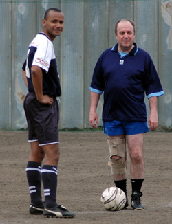

|
Todoroki, Sun 26th March. Considering the matches between the Hibs and Sala always contain a fair amount of bite (and spite), Sala have made a habit of doing us favours in their other matches. They handed us the first TML title by beating the Swiss in the final game and their two victories over the YCAC have made things much easier for us this time.
Despite the history of Ireland and England and both Tokyo based clubs having played many lively matches in Tokyo over the past 20 years; contests between the BFC and the Hibs have been played in very good spirit over the last few years and bar a few contested offside decisions; this game was no exception.
The Hibs began the game on top and were pressing the BFC goal strongly for the first 10 minutes. The first goal came after Yama beat the offside trap and played in Yasu; who gave the keeper no chance with a sweetly struck finish from 12 yards. The BFC were upset that the offside flag stayed down, but the call looked line ball and could have gone either way. I’ve always thought that defenders who like to play the offside trap often do so because it’s an easier option to take a couple of steps forward a stick one hand in the air than it is to track and mark an attacker. That’s just my 2 cents; but as the BFC had a bare 11 and no linesman of their own; tight man marking may have been the better option in this case.
 Keita’s movement and intelligent use of the ball was something we had missed for the past month while he was injured and he looked threatening when on or near the ball. Yasu was also having a great game working hard in defense, strong in the air and dangerous in attack. He deserved his second goal mid way through the first half. Keita weaved the ball through to him from the bye line on the right and Yasu lifted it up into the back post side netting from a tight angle for the Hibs to go 2-0 up. The BFC came back into the game in the last 20 minutes of the first half looking dangerous on counter attacks and from set pieces. Hitoshi came to the rescue on a few occasions with some nimble interjections to clear danger. Another debatable offside flag that went against the Hibs saw a Tomo goal disallowed and some poor finishing from the Hibs meant the 2-0 score line was probably a fair reflection of the half.
The second half began with BFC founder and legend of 25 years service to the BFC Gordon kicking off to the cheers of the crowd. 5 minutes into the second half and Kuni K received the ball just inside the box with his back to goal. He turned sharply and a BFC foot caught his leg causing him to stumble; instead of falling to the ground like professional strikers are taught to these days he tried to keep running but he had stumbled too far and ref Q had no choice but to award a penalty. The BFC keeper Jyrki dived a bit too early making the conversion relatively straightforward.
The BFC were spurned into action and they began to dominate field position and possession for long periods. The pressure told when a great cross from Jon Day found Mark K in between Bevan and Kuni H and he headed bravely past the approaching Hitoshi to the score back post. A good goal, but better communication in defense between Bevan and Kuni H would have prevented it. The BFC continued to press forwards and Hitoshi was called into action a few times to make some quality saves and the Hibs were somewhat fortunate to maintain the 2 goal buffer. 5 minutes to go and against the run of play, Hibs big hit-man the Jorgenator, showed his nose for a goal as Yama was played in on the right and the linesman’s flag went straight up. Ref Quentin overruled the linesman’s flag, and Yama played it to Keita who crossed for Jorgen to finish from close range while the BFC were waiting for the whistle and had stopped defending. A potentially explosive incident but credit to the BFC they did not complain too much as they realized it was not going to effect the result.
All in all a good game played in good spirit. The Hibs now need to win 2 out of the last 3 games to take the title. With Shogun Knights, Sala and the YCAC to come it’s not going to be easy, but we have our destiny in our own hands.
Match reporter: Bevan Colless.
|